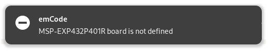
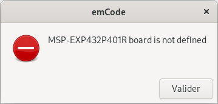

Build the project¶
To build,
-
Press Ctrl+Shift+B, or
-
Call the prompt with Ctrl+Shift+P, enter
Tasks: Run Taskand select Build.
Define parallel build¶
By default, emCode use parallel build to speed-up the process. The parallel build uses as many threads as cores available.
The impact of parallel build on speed depends on the number of cores of the microprocessor.
If parallel build is unstable, return to the standard build with one thread.
To reverse to standard build with one thread,
-
Open the
tasks.jsonfile under the.vscodefolder of the project; -
Remove the
"-j",line from the task arguments.
"tasks": [
{
"label": "Build",
"type": "shell",
"command": "make",
"args": [
"build",
"-j",
"SELECTED_BOARD=${command:cpptools.activeConfigName}"
],
"group": {
"kind": "build",
"isDefault": true
},
"detail": "Build with makefile"
},
]
Define compiler options¶
Some project may require additional options.
-
Open the main
Makefileand -
Add the parameters to the variable
COMPILER_OPTIONSin the mainMakefile.
Compiler options
----------------------------------
If 0 or empty, no additional options
COMPILER_OPTIONS = -fpermissive
In this example, -fpermissive has been added.
Compiler options
----------------------------------
If 0 or empty, no additional options
COMPILER_OPTIONS = -Wl,-u,_printf_float,-u,-_scanf_float
In this example, formatting float numbers has been added.
COMPILER_OPTIONS = -flto
In this example, the -flto implements link time optimisation on GCC to optimise the executable size.
For more information on the authorised parameters,
- Please refer to the compiler documentation.
Define linker options¶
Some project may require additional options.
-
Open the main
Makefileand -
Add the parameters to the variable
LINKER_OPTIONSin the mainMakefile.
Compiler and linker options
----------------------------------
If 0 or empty, no additional options
COMPILER_OPTIONS =
LINKER_OPTIONS = -Wl,--check-sections
In this example, -Wl,--check-sections has been added.
For more information on the authorised parameters,
- Please refer to the compiler documentation.
Define warning messages¶
Contrary to errors, warnings don’t stop compilation but they point at possible cause of errors.
The variable WARNING_OPTIONS on the main Makefile selects the scope of the warning messages.
By default, the variable WARNING_OPTIONS is set to 0: no warning messages are reported.
Warning options
----------------------------------
For example, unused variables with unused-variable.
If 0, no warnings
If empty, all warnings, same as WARNING_OPTIONS = all
WARNING_OPTIONS = all no-missing-braces no-conversion-null no-pointer-arith
WARNING_OPTIONS = unused-variable unused-function unused-label unused-value no-conversion-null no-pointer-arith
WARNING_OPTIONS = 0
If WARNING_OPTIONS is left empty, all warnings are displayed. This is the same as WARNING_OPTIONS = all.
Warning options
WARNING_OPTIONS = all
The all option corresponds to the -Wall parameter and usually generates a very long list of warning messages, making the analysis difficult if not impossible.
The solution consists on selecting a scope and targeting specific warnings.
Define the selected warnings by listing the options after the variable WARNING_OPTIONS.
Here are two examples:
- To check all the unused elements and save precious SRAM and Flash memory, define the following warning options.
Warning options
WARNING_OPTIONS = unused-variable unused-function unused-label unused-value
- To check all the use of
NULL, define the following warning options.
Warning options
WARNING_OPTIONS = conversion-null pointer-arith
For more information on the many other warning messages options,
- Please refer to the Using the GNU Compiler Collection Manual .
Define a binary specific name¶
Some project may setting a specific name for the binary. Default names of the binaries are based on emcode: emcode.bin, emcode.hex, emcode.elf and alike.
To define a specific binary name,
-
Open the main
Makefile; -
Add or edit the line
BINARY_SPECIFIC_NAME; and -
Define a binary specific name.
C-compliant project name and extension
PROJECT_NAME_AS_IDENTIFIER = embed1
Binary name, default=emcode
BINARY_SPECIFIC_NAME = $(PROJECT_NAME_AS_IDENTIFIER)
In the example, the binary specific name is set to embed1, the C-compliant name of the project through the variable $(PROJECT_NAME_AS_IDENTIFIER).
- Just enter whatever value after
BINARY_SPECIFIC_NAMEto set another name,
Binary name, default=emcode
BINARY_SPECIFIC_NAME = myBinarySpecificName
Define message options¶
The terminal window of Visual Studio Code reports the progress of the task with two lines.
1 2 | |
-
The first line is the summary and mentions the number of the task and the file. It is activated by default.
-
The second line provides the full command. It is desactivated by default.
HIDE_NUMBER and HIDE_COMMAND can hide and show the first line or second line. It is recommended to keep at least one option activated.
Edit the main Makefile to modifiy the default options.
Build option, number and command lines
HIDE_NUMBER = true
HIDE_COMMAND = false
All the messages are displayed on the terminal window of Visual Studio Code.
As an option, the warning and error messages can be displayed as notifications or dialogue boxes.
The warning and error messages are always printed on the terminal window.
* Executing task: make build -j SELECTED_BOARD=LaunchPad_MSP432P401R_EMT
ERROR MSP-EXP432P401R board is not defined
.
~/.emCode/Tools/Makefiles/Step1.mk:567: *** Stop. Stop.
The notifications rely on notify-send.

Install the utility with
sudo apt install libnotify-bin
Edit the main Makefile to add the notification option.
# GUI option for messages
GUI_OPTION = NOTIFY
The dialogue boxes rely on zenity.

Edit the main Makefile to add the dialogue box option.
# GUI option for messages
GUI_OPTION = ZENITY
Define a final command¶
Some project may require to run a final command once compilation is successful.
To define a final command,
-
Open the main
Makefile, -
Add or edit the line
COMMAND_FINALand -
Define the bash command.
Final command after make,
COMMAND_FINAL = cp $(TARGET_HEX) $(CURRENT_DIR)/
In the example, the final command copies the binary .hex to the folder of the project.
The Report Navigator displays the final command.
---- Final ----
cp ./.builds/emcode.hex .
==== Make done ====
Define other options¶
If the main Makefile doesn’t define or doesn’t set a value to a parameter, the following default values are used.
All those parameters and default values are listed on the emCode/Tools/Makefiles/Step0.mk file.
| Parameter | Default value | Comment |
|---|---|---|
SKETCH_EXTENSION |
ino |
Official extension |
HIDE_NUMBER |
false |
Display the summary |
HIDE_COMMAND |
true |
Print the command line |
HIDE_INFO |
false |
Display the general information |
HIDE_TOOLS |
false |
Display the list of tools |
HIDE_ALL |
false |
Turn on all the hide options |
KEEP_MAIN |
false |
Update main.cpp |
KEEP_TASKS |
false |
Update the list of tasks |
USE_ARCHIVES |
true |
Use available pre-compile archives for local libraries |
OPTIMISATION |
-Os -g3 |
Set optimisation and debugging |
BINARY_SPECIFIC_NAME |
emcode |
Name of the generated executable |
USER_LIB_PATH |
Sketchbook | Full path to the user’s libraries |
APPLICATIONS_PATH |
$(HOME)/Applications |
Location of the Arduino IDE |
SEGGER_PATH |
/opt/SEGGER |
Location of the Segger tools |
STM32_CUBE_PATH |
~/Applications/STM32CubeProgrammer |
Location of the STM32CubeProgrammer tools |
SERIAL_BAUDRATE |
115200 |
Serial speed |
NO_SERIAL_CONSOLE |
true |
Do not launch the serial console |
GUI_OPTION |
NONE |
Select the GUI option for messages |
By default, USER_LIB_PATH refer to the library sub-folder of the sketchbook folder Arduino defined by Arduino.
When specified, USER_LIB_PATH could be an absolute or a relative path.
USER_LIB_PATH = /home/User/Projects/Libraries
USER_LIB_PATH = ../Libraries
Run batch build¶
emCode can process batch build.
- Open a Terminal window;
If the current folder contains different projects, one per sub-folder,
- Launch
BOARD="Raspberry_Pi_Pico_RP2040_DebugProbe_CMSIS_DAP"
OPTIONS="HIDE_ALL=true"
for f in */ ;
do
echo ">>> $f" ;
if [ -f $f/*.ino ] ;
then
cd $f ;
make build -j SELECTED_BOARD=$BOARD $OPTIONS ;
cd .. ;
fi ;
done